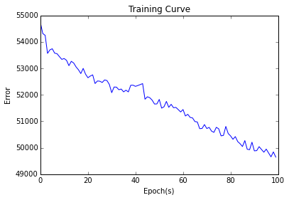

Python 2.7.10 (default, Oct 14 2015, 16:09:02)
Type "copyright", "credits" or "license" for more information.
IPython 4.1.2 -- An enhanced Interactive Python.
? -> Introduction and overview of IPython's features.
%quickref -> Quick reference.
help -> Python's own help system.
object? -> Details about 'object', use 'object??' for extra details.
%guiref -> A brief reference about the graphical user interface.
In [1]: runfile('/home/ayush/gitrepo/big-data-analytics/lstm_model.py', wdir='/home/ayush/gitrepo/big-data-analytics')
Dataset loaded
Traceback (most recent call last):
File "<ipython-input-1-4e15632a4e11>", line 1, in <module>
runfile('/home/ayush/gitrepo/big-data-analytics/lstm_model.py', wdir='/home/ayush/gitrepo/big-data-analytics')
Dataset loaded
Started training
epoch:1/100 loss:54725.7184
epoch:2/100 loss:54314.1081
epoch:3/100 loss:54246.8391
epoch:4/100 loss:53564.5580
epoch:5/100 loss:53697.7504
epoch:6/100 loss:53739.6116
epoch:7/100 loss:53573.2803
epoch:8/100 loss:53552.2042
epoch:9/100 loss:53442.1418
epoch:10/100 loss:53338.1950
epoch:11/100 loss:53369.9025
epoch:12/100 loss:53302.2991
epoch:13/100 loss:53100.8933
epoch:14/100 loss:53264.5963
epoch:15/100 loss:53201.5169
epoch:16/100 loss:53054.0799
epoch:17/100 loss:52946.3432
epoch:18/100 loss:52802.1768
epoch:19/100 loss:52998.0007
epoch:20/100 loss:52779.1717
epoch:21/100 loss:52644.1560
epoch:22/100 loss:52709.0167
epoch:23/100 loss:52753.1338
epoch:24/100 loss:52425.8084
epoch:25/100 loss:52522.4759
epoch:26/100 loss:52513.3829
epoch:27/100 loss:52465.7611
epoch:28/100 loss:52561.2885
epoch:29/100 loss:52538.6326
epoch:30/100 loss:52391.9070
epoch:31/100 loss:52080.0992
epoch:32/100 loss:52294.5273
epoch:33/100 loss:52289.9992
epoch:34/100 loss:52191.6114
epoch:35/100 loss:52217.9811
epoch:36/100 loss:52111.3729
epoch:37/100 loss:52174.3556
epoch:38/100 loss:52109.7686
epoch:39/100 loss:52360.5365
epoch:40/100 loss:52362.3393
epoch:41/100 loss:52319.5114
epoch:42/100 loss:52351.2269
epoch:43/100 loss:52386.2767
epoch:44/100 loss:52422.8198
epoch:45/100 loss:51833.5517
epoch:46/100 loss:51925.4959
epoch:47/100 loss:51890.6127
epoch:48/100 loss:51799.2656
epoch:49/100 loss:51652.1524
epoch:50/100 loss:51655.6525
epoch:51/100 loss:51825.4017
epoch:52/100 loss:51496.7416
epoch:53/100 loss:51548.7607
epoch:54/100 loss:51751.2589
epoch:55/100 loss:51527.8572
epoch:56/100 loss:51641.0717
epoch:57/100 loss:51512.0193
epoch:58/100 loss:51524.7621
epoch:59/100 loss:51440.0758
epoch:60/100 loss:51352.0704
epoch:61/100 loss:51443.5748
epoch:62/100 loss:51200.4848
epoch:63/100 loss:51262.3315
epoch:64/100 loss:51146.2997
epoch:65/100 loss:51126.1681
epoch:66/100 loss:50989.0814
epoch:67/100 loss:50975.4812
epoch:68/100 loss:50721.7598
epoch:69/100 loss:50727.8987
epoch:70/100 loss:50875.6244
epoch:71/100 loss:50726.4563
epoch:72/100 loss:50769.0769
epoch:73/100 loss:50628.2685
epoch:74/100 loss:50582.2194
epoch:75/100 loss:50772.6602
epoch:76/100 loss:50716.5247
epoch:77/100 loss:50449.5322
epoch:78/100 loss:50466.0652
epoch:79/100 loss:50806.3217
epoch:80/100 loss:50536.5490
epoch:81/100 loss:50446.9152
epoch:82/100 loss:50319.7152
epoch:83/100 loss:50421.1972
epoch:84/100 loss:50234.3391
epoch:85/100 loss:50152.2546
epoch:86/100 loss:50046.3930
epoch:87/100 loss:50271.3403
epoch:88/100 loss:49943.0592
epoch:89/100 loss:49926.7118
epoch:90/100 loss:50210.6523
epoch:91/100 loss:49883.0426
epoch:92/100 loss:49891.9583
epoch:93/100 loss:50041.4746
epoch:94/100 loss:49935.6284
epoch:95/100 loss:49832.1221
epoch:96/100 loss:49949.2273
epoch:97/100 loss:49801.1195
epoch:98/100 loss:49657.3575
epoch:99/100 loss:49843.8908
epoch:100/100 loss:49646.4236
Confusion matrix:
[[ 2167 16759]
[ 969 37424]]
Accuracy: 69.07%
Precision score: 69.07%
Recall score 97.48%
F1 Score: 80.85%

In [3]: